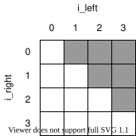
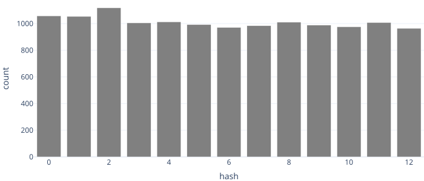

Overview
-
We want to find duplicate files, but can't rely on their names
-
Comparing pairs of files byte by byte is slow
- And gets slower per file as the number of files grows
-
Better approach:
-
Calculate an identifier for each file that depends on its content
-
Group files with the same identifier and compare those
-
-
Even better: calculate identifiers so that if two files have the same ID, they're guaranteed to have the same content
Start Simple
-
Take filenames as command-line arguments
-
Generate and print a list of duplicate pairs
def find_duplicates(filenames):
matches = []
for left in filenames:
for right in filenames:
if same_bytes(left, right):
matches.append((left, right))
return matches
if __name__ == "__main__":
duplicates = find_duplicates(sys.argv[1:])
for (left, right) in duplicates:
print(left, right)
Byte by Byte
def same_bytes(left_name, right_name):
left_bytes = open(left_name, "rb").read()
right_bytes = open(right_name, "rb").read()
return left_bytes == right_bytes
-
open(filename, "r")opens a file for reading characters -
But images, audio clips, etc. aren't character data
-
So use
open(filename, "rb")to open in binary mode- Look at the difference in more detail in Chapter 17
Test Case
- Create a
testsdirectory with six files
a1.txt |
a2.txt |
a3.txt |
b1.txt |
b2.txt |
c1.txt |
|---|---|---|---|---|---|
| aaa | aaa | aaa | bb | bb | c |
-
Expect the three
afiles and the twobfiles to be reported as duplicates -
No particular reason for these tests—we just have to start somewhere
Test Output
python brute_force_1.py tests/*.txt
tests/a1.txt tests/a1.txt
tests/a1.txt tests/a2.txt
tests/a1.txt tests/a3.txt
tests/a2.txt tests/a1.txt
tests/a2.txt tests/a2.txt
tests/a2.txt tests/a3.txt
tests/a3.txt tests/a1.txt
tests/a3.txt tests/a2.txt
tests/a3.txt tests/a3.txt
tests/b1.txt tests/b1.txt
tests/b1.txt tests/b2.txt
tests/b2.txt tests/b1.txt
tests/b2.txt tests/b2.txt
tests/c1.txt tests/c1.txt
- Oops
Revise Our Approach
def find_duplicates(filenames):
matches = []
for i_left in range(len(filenames)):
left = filenames[i_left]
for i_right in range(i_left):
right = filenames[i_right]
if same_bytes(left, right):
matches.append((left, right))
return matches

Algorithmic Complexity
-
\( N \) objects can be paired in \( N(N-1)/2 \) ways
-
So for very large \( N \), work is proportional to \( N^2 \)
-
Computer scientist would say "time complexity is \( O(N^2) \)"
- Pronounced "big-oh of N squared"
-
In practice, this means that the time per file increases as the number of files increases
-
Sometimes unavoidable, but in this case there's a better way
Grouping Files
-
Process each file once to produce a short identifier
-
I.e., use a hash function to produce a hash code
-
Only compare files with the same identifier
Naive Hashing
- Bytes are just numbers
def naive_hash(data):
return sum(data) % 13
example = bytes("hashing", "utf-8")
for i in range(1, len(example) + 1):
substring = example[:i]
hash = naive_hash(substring)
print(f"{hash:2} {substring}")
0 b'h'
6 b'ha'
4 b'has'
4 b'hash'
5 b'hashi'
11 b'hashin'
10 b'hashing'
How Good Is This?
-
Want all hash codes to be equally likely
-
Hash each line of the novel Dracula and plot distribution

After a Little Digging…
-
Our text file uses a blank line to separate paragraphs
-
Look at the distribution of hash codes of unique lines

Modifying Our Program
- Build a dictionary with hash codes as keys and sets of files as values
def find_groups(filenames):
groups = {}
for fn in filenames:
data = open(fn, "rb").read()
hash_code = naive_hash(data)
if hash_code not in groups:
groups[hash_code] = set()
groups[hash_code].add(fn)
return groups
- If we haven't seen this key before, add it with an empty value
Modifying Our Program
- We can re-use most of the previous code
groups = find_groups(sys.argv[1:])
for filenames in groups.values():
duplicates = find_duplicates(list(filenames))
for (left, right) in duplicates:
print(left, right)
tests/a2.txt tests/a1.txt
tests/a3.txt tests/a1.txt
tests/a3.txt tests/a2.txt
tests/b1.txt tests/b2.txt
But We Can Do Better
-
Use a cryptographic hash function
-
Output is completely deterministic
-
But also unpredictable
-
And distributed like a uniform random variable
-
-
Output depends on order of input as well as value
- With overwhelming probability, any change in input will produce a different output
We Don't Need Groups
-
Odds that two people don't share a birthday are \( 364/365 \)
-
Odds that three people don't have are \( (364/365) {\times} (363/365) \)
-
There's a 50% chance of two people sharing a birthday in a group of 23 people and a 99.9% chance with 70 people
-
How many files do we need to hash before there's a 50% chance of a collision with a 256-bit hash?
-
Answer is "approximately \( 4{\times}10^{38} \) files"
-
We're willing to take that risk
SHA-256 Example
example = bytes("hash", "utf-8")
for i in range(1, len(example) + 1):
substring = example[:i]
hash = sha256(substring).hexdigest()
print(f"{substring}\n{hash}")
b'h'
aaa9402664f1a41f40ebbc52c9993eb66aeb366602958fdfaa283b71e64db123
b'ha'
8693873cd8f8a2d9c7c596477180f851e525f4eaf55a4f637b445cb442a5e340
b'has'
9150c74c5f92d51a92857f4b9678105ba5a676d308339a353b20bd38cd669ce7
b'hash'
d04b98f48e8f8bcc15c6ae5ac050801cd6dcfd428fb5f9e65c4e16e7807340fa
hexdigestgives hexadecimal representation of 256-bit hash code
Duplicate Finder
import sys
from hashlib import sha256
def find_groups(filenames):
groups = {}
for fn in filenames:
data = open(fn, "rb").read()
hash_code = sha256(data).hexdigest()
if hash_code not in groups:
groups[hash_code] = set()
groups[hash_code].add(fn)
return groups
if __name__ == "__main__":
groups = find_groups(sys.argv[1:])
for filenames in groups.values():
print(", ".join(sorted(filenames)))
Duplicate Finder
python dup.py tests/*.txt
tests/a1.txt, tests/a2.txt, tests/a3.txt
tests/b1.txt, tests/b2.txt
tests/c1.txt
-
Runtime is \(O(N)\), i.e., fixed time per file
-
Which is as good as it can possibly be
Learning Debt
-
What else can we use hashing for?
-
Dictionaries
-
Version control
-
-
How can we test our duplicate finder?
-
How can we make sure the code follows style guidelines?
-
How can we package it for others to use?